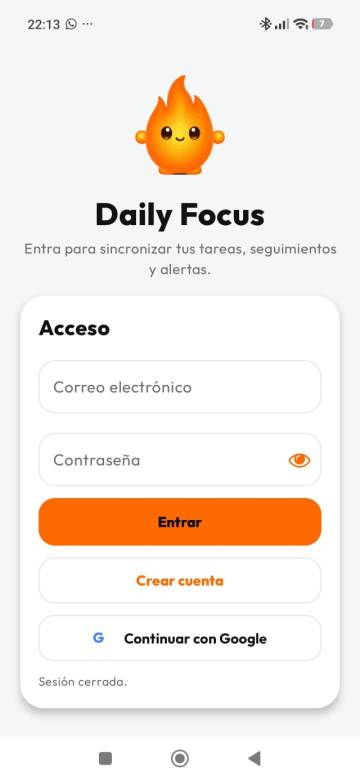
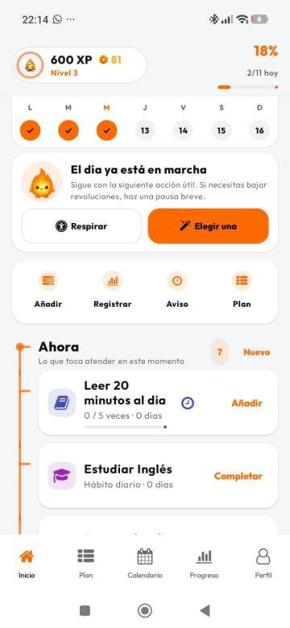
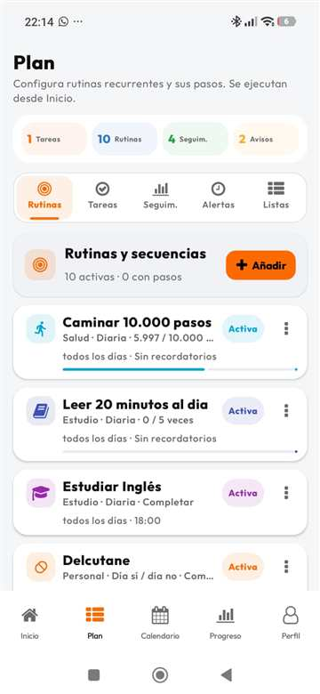
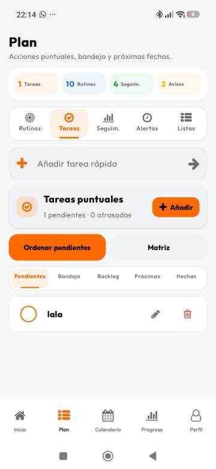
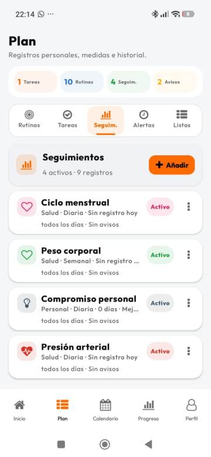
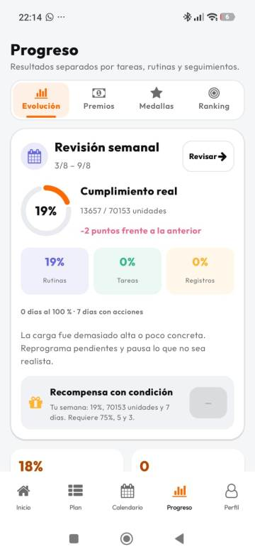
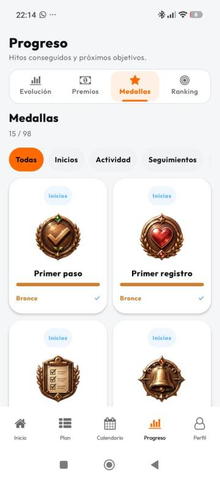
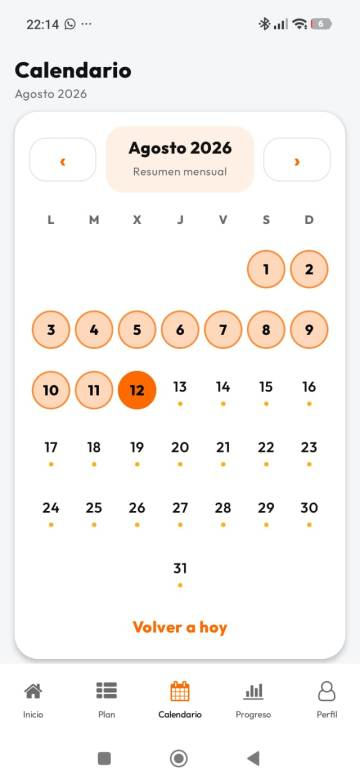

Less noise. More intention.
Make room for what matters.
Daily Focus turns your tasks, routines and goals into a simple view of your day. Organize what matters and move at your own pace.
✓ Clear design✓ Your data, under your control✓ No intrusive ads

Daily Focus
This is Daily Focus
Real screenshots from the app.
What you see here is the experience you will find when you open Daily Focus. No invented mockups.







Your next step starts here